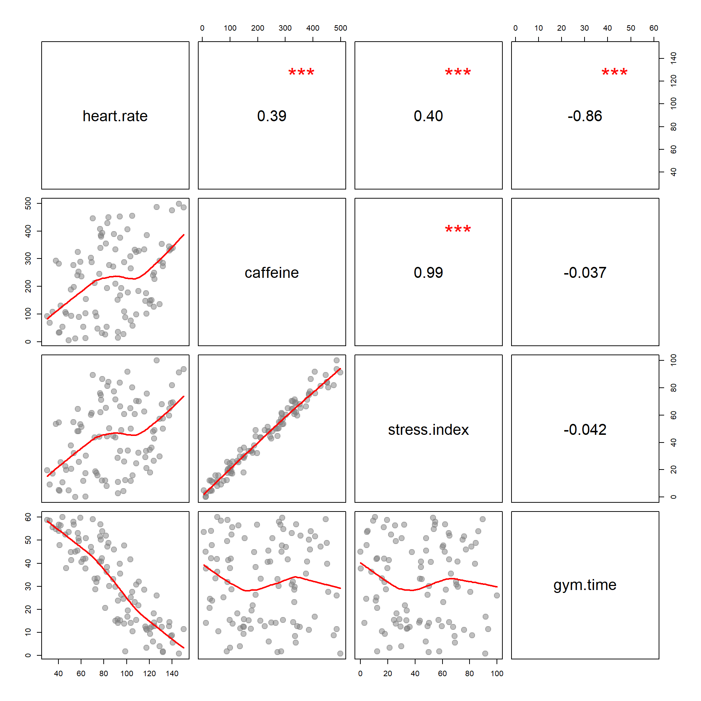

Control Variables

| Dependent variable: | |||||
| heart.rate | |||||
| Model 1 | Model 2 | Model 3 | Model 4 | Model 5 | |
| (1) | (2) | (3) | (4) | (5) | |
| Caffeine | 0.087*** | 0.009 | 0.080*** | 0.037 | |
| (0.021) | (0.121) | (0.008) | (0.047) | ||
| Stress Index | 0.460*** | 0.414 | 0.228 | ||
| (0.108) | (0.631) | (0.246) | |||
| Time Spent at Gym | -1.441*** | -1.440*** | |||
| (0.062) | (0.062) | ||||
| Intercept | 68.953*** | 68.251*** | 68.267*** | 116.461*** | 116.022*** |
| (5.454) | (5.535) | (5.568) | (2.942) | (2.982) | |
| Observations | 100 | 100 | 100 | 100 | 100 |
| R2 | 0.153 | 0.157 | 0.157 | 0.872 | 0.873 |
| Note: | p<0.1; p<0.05; p<0.01 | ||||